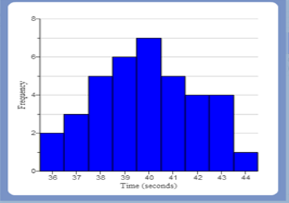
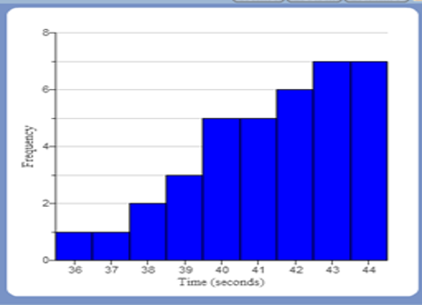
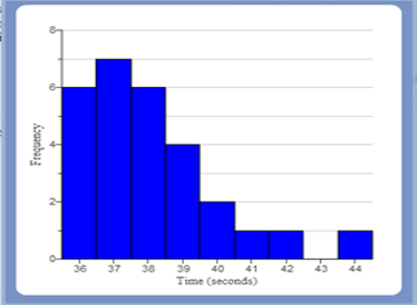

If there is one prayer that you should pray/sing every day and every hour, it is the
LORD's prayer (Our
FATHER in Heaven prayer)
- Samuel Dominic Chukwuemeka
It is the most powerful prayer.
A pure heart, a clean mind, and a clear conscience is necessary for it.
For in GOD we live, and move, and have our being.
- Acts 17:28
The Joy of the Teacher is the Success of the Students..
- Samuel
Chukwuemeka
Inferential Statistics
I greet you this day,
First: Read the Stories (Yes, I tell stories too. ☺)
The stories will introduce you to the topic, while making you smile/laugh at the same time.
Second: Review the Notes.
Third: View the Videos.
Fourth: Solve the questions/solved examples.
Fifth: Check your solutions with my thoroughly-explained solved examples.
Sixth: Check your answers with the calculators.
I wrote some of the codes for the calculators using Javascript, a client-side scripting language. In
addition, I used the AJAX Javascript library. Please use the latest Internet browsers.
The calculators should work.
Comments, ideas, areas of improvement, questions, and constructive criticisms are welcome. Should you
need to contact me, please use the form at the bottom of the page. Thank you for visiting.
Samuel Chukwuemeka (Samdom For Peace)
B.Eng., A.A.T, M.Ed., M.S
Story on the Measures of Center
It was a Saturday
A family of the Dad, Mom, Daughter, Son
The two children are in middle school.
The Dad and Mom were reviewing the notes of their children
The children were reading books.
All of them were in the living room at home.
Dad: Elijah
Son: Yes, Dad
Dad: Esther
Daughter: Yes, Dad
Dad: A philanthropist wanted to buy shoes for the motherless and fatherless children at an
orphanage.
There were $300$ children at the orphanage.
He arrived at the orphanage and asked for a shoe size.
What shoe size should the director recommend?
Son: He asked for just a shoe size...
Rather than shoe sizes?
Dad: Yes. Do you not think it is cumbersome to ask for the shoe sizes of $300$ children?
Son: But, if he really wanted to help, why would he not help "all" of them?
Typically, all of them would not have the same shoe size.
So, why not just make everyone happy by providing each one with the shoe that fits him/her?
Dad: I understand.
But, let's assume he just wanted a shoe size.
What shoe size should the director give?
Son: But, Dad; why would he want to do that?
Dad: Answering questions with questions...typical of a Nigerian
Just answer my question or say you do not know the answer.
Rather than answering it with a question
Son: I have your gene, Dad ☺
Dad: Whatever...
But, I want you to think about it... while I ask your sister
Esther, what shoe size would the director recommend?
Daughter: I think Elijah made a point.
Why would the philanthropist choose to buy shoes of only one size?
One size certainly does not fit all.
Mom: Listen my children.
Your Dad is indirectly asking you about what you learned in school last week.
He wants you to see the connection/application of what you learned.
Daughter: Okay, Mom. I get it.
The director can measure the shoe sizes of the $300$ children.
Find the sum.
And divide by $300$
That is known as the Mean or Average
Dad: Correct! Proud of you, Daddy's girl! ☺
Son: The second way would be the arrange all those measured shoe sizes in order ...
Preferably in ascending order
Because it is an even sample size, there would be two sizes in the middle.
So, find the average of those two sizes.
That measure is the Median
Mom: Perfect! Mummy's boy! ☺
But, why would you arrange the sizes in ascending order?
What about descending order?
Would it not give the same result?
Daughter: Mom, guess what? ☺
That was the same question Elijah asked Mr. C in the class ☺
Mom: What did he say?
Son: He said that it is normal to start from the kindergarten up to the $12^{th}$ grade...
Rather than from the $12^{th}$ grade to the kindergarten
Dad: Wow, that is an "okay" answer. Is that the only reason?
Daughter: He also said that when we study the Quartiles, we must have to arrange it
in ascending order.
So, it is better to just learn to arrange the data in ascending order.
Dad: That is correct.
What other ways do we have?
Daughter: The director can find the most popular shoe size
Dad: What do you mean by "most popular"?
Daughter: By "most popular", I mean the shoe size that most of the children wear
Dad: Okay, but I am looking for a term... a statistics term...
Son: It means the shoe size with the highest frequency.
Dad: and the measure is called the ...
Daughter: Mode
Dad: Wow, my children are wonderful! Thank GOD!
Mom: Our children...
Dad: Yes, GOD gave us intelligent children.
Mom: What is the remaining measure of center?
Son: It's my turn this time.
The fourth measure is the Midrange
The director can take the average of the minimum shoe size and the maximum shoe size.
Mom and Dad: That is correct!
Dad: These are called the Measures of Center
Mom: or the Measures of Central Tendency
Dad: because they tend towards the "center" of the data set
Mom: and the center is seen as a representative of the whole.
Dad: The mean or average is the most used.
Although each of these measure has it's advantages and disadvantages
Mom: The midrange is also an average.
Dad: And if the sample size is an even number, the median is also an average.
Daughter: Thank You, Dad! Thank You, Mom!
Son: Thank You, Mom! Thank You, Dad!
Dad and Mom: You are most welcome!!!
Objectives
Students will:
(1.) Discuss descriptive statistics.
(2.) Explain the measures of center.
(3.) Compute the measures of central tendency of data by formula.
(4.) Compute the measures of central tendency of data by technology.
(5.) Compute the measures of central tendency of data by formula.
(6.) Explain the measures of spread.
(7.) Compute the measures of variation of data by formula.
(8.) Compute the measures of dispersion of data by technology.
(9.) Explain the measures of position.
(10.) Compute the measures of location of data by formula.
(11.) Compute the measures of position of data by technology.
(12.) Define z-scores.
(13.) Interpret z-scores
(14.) Convert a data value to a quantile.
(15.) Convert a quantile to a data value.
(16.) Determine the five-number summary of a data set.
(17.) Construct a boxplot for a data set.
(18.) Determine outliers using fences.
(19.) Explain the shape of the distribution of data.
(20.) Solve applied problems on descriptive statistics.
Definitions
Descriptive Statistics is the science that deals with the organization and presentation of the collected data.
Symbols
-
Symbols and Meanings
- $X$ = dataset $X$
- $x = x-values$ OR data values
- $x_{mid}$ = class midpoint of $x-values$ = class midpoint of the data values
- $\Sigma$ (pronounced as uppercase Sigma) = $summation$
- $\Sigma x$ = summation of the $x-values$
- $f = frequency$
- $F = frequency$
- $\Sigma f$ = summation of the frequencies
- $\Sigma fx$ = summation of the product of the $x-values$ and their corresponding frequencies
- $(\Sigma x)^2$ = square of the summation of the $x-values$
- $\Sigma x^2$ = summation of the squared of the $x-values$
- $\bar{x}$ is sample mean of the $x-values$
- $\mu$ = population mean
- $n$ = sample size
- $N$ = population size
- $\tilde{x}$ = median
- $\widehat{x}$ = mode
- $AM$ = assumed mean
- $D$ = deviation from the assumed mean
- $x_{MR}$ = midrange
- $LCL$ = lower class limit
- $UCL$ = upper class limit
- $min$ = minimum data value
- $max$ = maximum data value
- $LCB_{med}$ = lower class boundary of the median class
- $CW$ = class width
- $f_{med}$ = frequency of the median class
- $CF_{bmed}$ = cumulative frequency of the class before the median class
- $LCB_{mod}$ = lower class boundary of the modal class
- $f_{mod}$ = frequency of the modal class
- $f_{bmod}$ = frequency of the class before the modal class
- $f_{amod}$ = frequency of the class after the modal class
- $R$ = range
- $s$ = sample standard deviation
- $s^2$ = sample variance
- $\sigma$ = population standard deviation
- $\sigma^2$ = population variance
- $CV$ = coefficient of variation
- $z = z-score$
- $Q_1$ = lower quartile or first quartile
- $P_{25}$ = 25th percentile or first quartile
- $Q_2$ = middle quartile or second quartile or median
- $P_{50}$ = 50th percentile or median
- $Q_3$ = upper quartile or third quartile
- $P_{75}$ = 75th percentile or third quartile
- $IQR$ = interquartile range
- $SIQR$ = semi-interquartile range
- $MQ$ = midquartile
- $LF$ = lower fence
- $UF$ = upper fence
- $TM$ = trimmed mean
- $\Pi$ (pronounced as uppercase Pi) = $product$
- $\Pi x$ = product of the $x-values$
- $GM$ = geometric mean
Measures of Center
The Measures of Center is also known as the Measures of Central Tendency
They are called the measures of central tendency because they tend towards the center of the
data set.
Most times, the center of the data can be seen as a representative of the entire sample data or
population data.
The measures of center are:
(1.) Mean of Average, $\bar{x}$
(2.) Median, $\tilde{x}$
(3.) Mode, $\widehat{x}$
(4.) Midrange, $x_{MR}$
Mean or Average
The Mean is commonly referred to as the Arithmetic Mean.
But, we have other types of mean: Geometric Mean, Quadratic Mean, and Harmonic Mean
We can also trim the mean, known as trimmed mean.
The Arithmetic Mean is the measure of center found by adding the data values of the variable and
dividing the sum by the count/total number of the data values.
Why Arithmetic Mean?: Have you heard of these statements?
(1.) The average miles per gallon of the $2015$ Hyundai Santa Fe in the highway is $36\:mpg$
(2.) Mr. C uses the weighted average method for determining the final grade of his students'
work.
(3.) The Consumer Price Index ($CPI$) is a measure of the average change in price over time in a
fixed
market basket of goods and services bought by customers for day-to-day living.
(4.) To be admitted into the graduate program at a certain university, you must have at least an
undergraduate cumulative
grade point average ($CGPA$) of $3.00$
(5.) According to the Bureau of Labor Statistics ($BLS$), the average expenditures in $2014$ was
$\$53,495$,
a $4.7$ percent increase from $2013$ spending level.
(6.) What was your grade point average ($GPA$) last semester?
Advantages of the Mean
(1.) The mean of a data set uses every data value.
(2.) Sample means drawn from the same population tend to have less variation when compared to the
other measures of center.
(3.) The mean is the most appropriate measure of center for symmetric (normal) distributions.

Normal (Symmetric) Distribution
(4.) The mean of a population can be estimated to be the sample means of the samples drawn from that
population.
This implies that:
$
\mu = \bar{x}_{\bar{x}}
$
Disadvantages of the Mean
(1.) The value of the mean can substantially change due to the presence of an outlier in the data set.
In this regard, we say that the mean is not resistant.
An outlier is an extreme data value - that is either too low or too high relative to the other
data values.
(2.) The mean is not an appropriate measure of center for skewed distributions.
Round-Off Rules for the Mean
Except otherwise stated, it is suggested to round the final answer
(not intermediate calculations) of the mean to one more decimal place than the original set of data
values.
Do not round intermediate calculations.
If you must round intermediate calculations, round to a reasonable number of decimal places (at least
three) more than the number of decimal places required for the answer.
Median
The Median is also the Middle Quartile or the $\boldsymbol{2^{nd}\:\:Quartile}$ or
the $\boldsymbol{50^{th}\:\:Percentile}$.
It is the middle value of a data value when the data set is sorted in ascending or descending
order. However, it is better to sort the data in ascending order rather than descending order.
Sorting in ascending order (ordering from least to greatest) is highly recommended.
Student: Why is the ascending order preferred over descending order?
The answer would still be the same either way. Is that right?
Teacher: Yes, that is correct.
However, when we discuss Quartiles - a measure of location, we shall have to sort in
ascending order.
Besides, one normally begins from the kindergarten up to the $12^{th}$ grade, and not the other
way around.
For an odd sample size (the sample size is an odd number), there is
only one middle value. That value is the median.
For an even sample size (the sample size is an even number), there are
two middle values. The median is the average of those two middle values.
Why Median?: Have you heard of these statements?
(1.) The median household income for a $6-person$ family in the State of Arizona during $2016$
is $\$51,590.00$ - Arizona State Median Income for Fiscal Year 2016 - The LIHEAP Clearinghouse
What does this mean?
This means that of all $6-person$ families in the State of Arizona, $\$51,590.00$ divides the lower
half of incomes from the upper half of the incomes.
(2.) The median home price for the homes sold in the San Francisco Bay Area in
March $2017$ was $\$709,000.00$ - Bay Area Median Home Price Approaches All-Time High - CBS San Francisco Wow!
(3.) The median age at first marriage by men in the United States for $2003$ is $27.1$ years -
Estimated Median
Age at First Marriage, by Sex - U.S Bureau of the Census
Advantages of the Median
(1.) The median is resistant to outliers. It is not affected by extremely low or extremely high
data values.
(2.) The median is the most appropriate measure of center for skewed distributions.
|
 Skewed Distribution (Skewed Left) |
 Skewed Distribution (Skewed Right) |
Disadvantages of the Median
(1.) The median does not use every data value in the data set.
(2.) Computing the
median of a grouped data algebraically is a bit cumbersome.
Round-Off Rules for the Median
Except otherwise stated, it is suggested to round the final answer
(not intermediate calculations) of the mean to one more decimal place than the original set of data
values.
Do not round intermediate calculations.
If you must round intermediate calculations, round to a reasonable number of decimal places (at least
three) more than the number of decimal places required for the answer.
Mode
The Mode is the data value that occurs most frequently in a data set.
It can also be defined as the data value with the highest frequency.
Why Mode?: Have you heard of these statements?
(1.) Louisville Quarterback, Lamar Jackson won the $2016$ Heisman Trophy award because he received the
most
first-place votes -
The New York Times
(2.) The modal age of the population of New Zealand from $1970 - 2010$ shows a similar
pattern for males and females from $1970 - 1989$. Then, the pattern for males and females
diverge -
National Population Estimates: September 2010 Quarter - Government of New
Zealand
Advantages of the Mode
(1.) The mode is resistant to outliers. It is not affected by extremely low or extremely high
data values.
(2.) The mode is the most appropriate measure of center for qualitative data.
(3.) The mode is the most appropriate measure of center for the nominal level of measurement of a
variable.
Disadvantages of the Mode
(1.) The mode does not use every data value in the data set.
(2.) A data set can have two modes (bimodal data set), more than two modes (multimodal data set),
or no mode at all. In such cases, the mode is not a good measure of center.
(3.) Computing the
mode of a grouped data algebraically is a bit cumbersome.
Round-Off Rules for the Mode
Except otherwise stated, it is suggested to leave the mode as is
Midrange
The Midrange is the average of the minimum and maximum values of a data set.
It is also known as Midextreme.
Why Midrange?: Have you heard of these statements?
(1.) Let us bring it to Algebra. Do you remember how to calculate the midpoint of two
points?
What is the formula?
$
For\:\:Point\:1\:(x_1, y-1) \:\:and\:\: Point\:2\:(x_2, y_2) \\[3ex]
Midpoint\:\:Formula = \left(\dfrac{x_1 + y_1}{2}, \dfrac{x_2 + y_2}{2}\right) \\[5ex]
$
(2.) What is a midrange computer system?
(3.) List some middle range watches. Give reasons for your answer.
Advantages of the Midrange
(1.) The midrange is very easy to compute.
(2.) The midrange is the most appropriate measure of center for uniform distributions.
Disadvantages of the Midrange
(1.) The midrange does not use every data value in the data set. It only uses two values -
the minimum and maximum values.
(2.) The midrange is not resistant to outliers. It is extremely affected by it.
Round-Off Rules for the Median
Except otherwise stated, it is suggested to round the final answer
(not intermediate calculations) of the mean to one more decimal place than the original set of data
values.
Do not round intermediate calculations.
If you must round intermediate calculations, round to a reasonable number of decimal places (at least
three) more than the number of decimal places required for the answer.
Formulas: Measures of Central Tendency
Raw Data and Ungrouped Data
$ \underline{Sample\:\:Mean} \\[3ex] (1.)\:\: \bar{x} = \dfrac{\Sigma x}{n} \\[5ex] (2.)\:\: n = \Sigma f \\[3ex] (3.)\:\: \bar{x} = \dfrac{\Sigma fx}{\Sigma f} \\[5ex] \underline{Given\:\:an\:\:Assumed\:\:Mean} \\[3ex] (4.)\:\: D = x - AM \\[3ex] (5.)\:\: \bar{x} = AM + \dfrac{\Sigma D}{n} \\[5ex] (6.)\:\: \bar{x} = AM + \dfrac{\Sigma fD}{\Sigma f} \\[7ex] \underline{Population\:\:Mean} \\[3ex] (7.)\:\: \mu = \dfrac{\Sigma x}{N} \\[5ex] (8.)\:\: N = \Sigma f \\[3ex] \underline{Given\:\:an\:\:Assumed\:\:Mean} \\[3ex] (9.)\:\: D = x - AM \\[3ex] (10.)\:\: \mu = AM + \dfrac{\Sigma D}{N} \\[5ex] (11.)\:\: \mu = AM + \dfrac{\Sigma fD}{\Sigma f} \\[7ex] \underline{Median} \\[3ex] (12.)\:\: \tilde{x} = \left(\dfrac{\Sigma f + 1}{2}\right)th \:\:for\:\:sorted\:\:odd\:\:sample\:\:size \\[5ex] (13.)\:\: \tilde{x} = \left(\dfrac{\Sigma f}{2}\right)th \:\:for\:\:sorted\:\:even\:\:sample\:\:size \\[7ex] \underline{Mode} \\[3ex] (14.)\:\: Mode = x-value(s) \:\;with\:\:highest\:\:frequency \\[5ex] \underline{Midrange} \\[3ex] (15.)\:\: x_{MR} = \dfrac{min + max}{2} \\[5ex] \underline{Geometric\;\;Mean} \\[3ex] (16.)\;\; GM = \sqrt[n]{\prod\limits_{x=1}^n x} $
Grouped Data
$ \underline{Class\:\:Midpoint} \\[3ex] (1.)\:\: x_{mid} = \dfrac{LCL + UCL}{2} \\[7ex] Equal\:\:Class\:\:Intervals\:(Same\:\:Class\:\:Size) \\[3ex] \underline{Mean} \\[3ex] (2.)\:\: \bar{x} = \dfrac{\Sigma fx_{mid}}{\Sigma f} \\[7ex] Equal\:\:Class\:\:Intervals\:(Same\:\:Class\:\:Size) \\[3ex] \underline{Given\:\:an\:\:Assumed\:\:Mean} \\[3ex] (3.)\:\: D = x_{mid} - AM \\[3ex] (4.)\:\: \bar{x} = AM + \dfrac{\Sigma fD}{\Sigma f} \\[7ex] \underline{Median} \\[3ex] (5.)\:\: \tilde{x} = LCB_{med} + \dfrac{CW}{f_{med}} * \left[\left(\dfrac{\Sigma f}{2}\right) - CF_{bmed}\right] \\[7ex] \underline{Mode} \\[3ex] (6.)\:\: \widehat{x} = LCB_{mod} + CW * \left[\dfrac{f_{mod} - f_{bmod}}{(f_{mod} - f_{bmod}) + (f_{mod} - f_{amod})}\right] $
Measures of Spread
The Measures of Spread is also known as the Measures of Variation or Measures of
Variability
They are called the measures of spread because they move away from the center of the
data set.
The measures of spread are:
(1.) Range, R
(2.) Variance, σ²
(3.) Standard Deviation, σ
(4.) Interquartile Range, IQR
Range
The Range is the difference between the maximum value and the minimum value of a dataset.
Standard Deviation
The Standard Deviation of a dataset is the square root of the average of the squared deviations
from the mean.
In other words, it is the square root of the variance.
It is the measure that tells us how far the data values are from the mean.
Formulas: Measures of Dispersion
Raw Data and Ungrouped Data
$ \underline{Range} \\[3ex] (1.)\:\: Range = max - min \\[3ex] \underline{Using\;\;Assumed\;\;Mean} \\[3ex] (2.)\;\; D = x - AM \\[5ex] \underline{Sample\:\:Variance} \\[3ex] \color{red}{First\:\:Formula} \\[3ex] (3.)\:\: s^2 = \dfrac{\Sigma(x - \bar{x})^2}{n - 1} \\[5ex] (4.)\:\: s^2 = \dfrac{\Sigma f(x - \bar{x})^2}{\Sigma f - 1} \\[5ex] \color{red}{Second\:\:Formula} \\[3ex] (5.)\:\: s^2 = \dfrac{n(\Sigma x^2) - (\Sigma x)^2}{n(n - 1)} \\[5ex] (6.)\:\: s^2 = \dfrac{\Sigma f(\Sigma fx^2) - (\Sigma fx)^2}{\Sigma f(\Sigma f - 1)} \\[7ex] \underline{Using\;\;Assumed\;\;Mean} \\[3ex] (7.)\;\; s^2 = \dfrac{\Sigma D^2}{n - 1} - \left(\dfrac{\Sigma D}{n - 1}\right)^2 \\[7ex] (8.)\;\; s^2 = \dfrac{\Sigma fD^2}{\Sigma f - 1} - \left(\dfrac{\Sigma fD}{\Sigma f - 1}\right)^2 \\[10ex] \underline{Population\:\:Variance} \\[3ex] \color{red}{First\:\:Formula} \\[3ex] (9.)\:\: \sigma^2 = \dfrac{\Sigma(x - \mu)^2}{N} \\[5ex] (10.)\:\: \sigma^2 = \dfrac{\Sigma f(x - \mu)^2}{\Sigma f} \\[5ex] \color{red}{Second\:\:Formula} \\[3ex] (11.)\:\: \sigma^2 = \dfrac{N(\Sigma x^2) - (\Sigma x)^2}{N^2} \\[5ex] (12.)\:\: \sigma^2 = \dfrac{\Sigma f(\Sigma fx^2) - (\Sigma fx)^2}{(\Sigma f)^2} \\[7ex] \underline{Using\;\;Assumed\;\;Mean} \\[3ex] (13.)\;\; \sigma^2 = \dfrac{\Sigma D^2}{N} - \left(\dfrac{\Sigma D}{N}\right)^2 \\[7ex] (14.)\;\; \sigma^2 = \dfrac{\Sigma fD^2}{\Sigma f} - \left(\dfrac{\Sigma fD}{\Sigma f}\right)^2 \\[10ex] \underline{Sample\:\:Standard\:\:Deviation} \\[3ex] \color{red}{First\:\:Formula} \\[3ex] (15.)\:\: s = \sqrt{\dfrac{\Sigma(x - \bar{x})^2}{n - 1}} \\[5ex] (16.)\:\: s = \sqrt{\dfrac{\Sigma f(x - \bar{x})^2}{\Sigma f - 1}} \\[5ex] \color{red}{Second\:\:Formula} \\[3ex] (17.)\:\: s = \sqrt{\dfrac{n(\Sigma x^2) - (\Sigma x)^2}{n(n - 1)}} \\[5ex] (18.)\:\: s = \sqrt{\dfrac{\Sigma f(\Sigma fx^2) - (\Sigma fx)^2}{\Sigma f(\Sigma f - 1)}} \\[7ex] \underline{Using\;\;Assumed\;\;Mean} \\[3ex] (19.)\;\; s = \sqrt{\dfrac{\Sigma D^2}{n - 1} - \left(\dfrac{\Sigma D}{n - 1}\right)^2} \\[7ex] (20.)\;\; s = \sqrt{\dfrac{\Sigma fD^2}{\Sigma f - 1} - \left(\dfrac{\Sigma fD}{\Sigma f - 1}\right)^2} \\[10ex] \underline{Population\:\:Standard\:\:Deviation} \\[3ex] \color{red}{First\:\:Formula} \\[3ex] (21.)\:\: \sigma = \sqrt{\dfrac{\Sigma(x - \mu)^2}{N}} \\[5ex] (22.)\:\: \sigma = \sqrt{\dfrac{\Sigma f(x - \mu)^2}{\Sigma f}} \\[5ex] \color{red}{Second\:\:Formula} \\[3ex] (23.)\:\: \sigma = \dfrac{\sqrt{N(\Sigma x^2) - (\Sigma x)^2}}{N} \\[5ex] (24.)\:\: \sigma = \dfrac{\sqrt{\Sigma f(\Sigma fx^2) - (\Sigma fx)^2}}{\Sigma f} \\[7ex] \underline{Using\;\;Assumed\;\;Mean} \\[3ex] (25.)\;\; \sigma = \sqrt{\dfrac{\Sigma D^2}{N} - \left(\dfrac{\Sigma D}{N}\right)^2} \\[7ex] (26.)\;\; \sigma = \sqrt{\dfrac{\Sigma fD^2}{\Sigma f} - \left(\dfrac{\Sigma fD}{\Sigma f}\right)^2} \\[10ex] \underline{Range\:\:Rule\:\:of\:\:Thumb} \\[3ex] Approximate\:\:Value\:\:of\:\:Calculating\:\:Standard\:\:Deviation \\[3ex] (27.)\:\: s = \dfrac{Range}{4} = \dfrac{max - min}{4} \\[7ex] \underline{Interquartile\:\:Range} \\[3ex] (28.)\:\: IQR = Q_3 - Q_1 \\[5ex] \underline{Coefficient\:\:of\:\:Variation\:\:for\:\:Sample} \\[3ex] (29.)\:\: CV = \dfrac{s}{x} * 100 ...in\:\:\% \\[7ex] \underline{Coefficient\:\:of\:\:Variation\:\:for\:\:Population} \\[3ex] (30.)\:\: CV = \dfrac{\sigma}{x} * 100 ...in\:\:\% \\[7ex] \underline{Mean\:\:Absolute\:\:Deviation} \\[3ex] (31.)\:\: MAD = \dfrac{\Sigma |x - \bar{x}|}{n} \\[5ex] \underline{Mean\:\:Absolute\:\:Deviation} \\[3ex] (32.)\:\: MAD = \dfrac{\Sigma f|x - \bar{x}|}{\Sigma f} \\[5ex] $
Grouped Data
$ \underline{Class\:\:Midpoint} \\[3ex] (1.)\:\: x_{mid} = \dfrac{LCL + UCL}{2} \\[5ex] \underline{Using\;\;Assumed\;\;Mean} \\[3ex] (2.)\;\; D = x_{mid} - AM \\[5ex] \underline{Sample\:\:Variance} \\[3ex] \color{red}{First\:\:Formula} \\[3ex] (3.)\:\: s^2 = \dfrac{\Sigma f(x_{mid} - \bar{x})^2}{\Sigma f - 1} \\[5ex] \color{red}{Second\:\:Formula} \\[3ex] (4.)\:\: s^2 = \dfrac{\Sigma f(\Sigma fx_{mid}^2) - (\Sigma fx_{mid})^2}{\Sigma f(\Sigma f - 1)} \\[5ex] \underline{Using\;\;Assumed\;\;Mean} \\[3ex] (5.)\;\; s^2 = \dfrac{\Sigma D^2}{n - 1} - \left(\dfrac{\Sigma D}{n - 1}\right)^2 \\[7ex] (6.)\;\; s^2 = \dfrac{\Sigma fD^2}{\Sigma f - 1} - \left(\dfrac{\Sigma fD}{\Sigma f - 1}\right)^2 \\[10ex] \underline{Sample\:\:Standard\:\:Deviation} \\[3ex] \color{red}{First\:\:Formula} \\[3ex] (7.)\:\: s = \sqrt{\dfrac{\Sigma f(x_{mid} - \bar{x})^2}{\Sigma f - 1}} \\[5ex] \color{red}{Second\:\:Formula} \\[3ex] (8.)\:\: s = \sqrt{\dfrac{\Sigma f(\Sigma fx_{mid}^2) - (\Sigma fx_{mid})^2}{\Sigma f(\Sigma f - 1)}} \\[5ex] \underline{Using\;\;Assumed\;\;Mean} \\[3ex] (9.)\;\; s = \sqrt{\dfrac{\Sigma D^2}{n} - \left(\dfrac{\Sigma D}{n - 1}\right)^2} \\[7ex] (10.)\;\; s = \sqrt{\dfrac{\Sigma fD^2}{\Sigma f - 1} - \left(\dfrac{\Sigma fD}{\Sigma f - 1}\right)^2} \\[10ex] \underline{Population\:\:Variance} \\[3ex] \color{red}{First\:\:Formula} \\[3ex] (11.)\:\: \sigma^2 = \dfrac{\Sigma f(x_{mid} - \bar{x})^2}{\Sigma f} \\[5ex] \color{red}{Second\:\:Formula} \\[3ex] (12.)\:\: \sigm^2 = \dfrac{\Sigma f(\Sigma fx_{mid}^2) - (\Sigma fx_{mid})^2}{\Sigma f(\Sigma f)} \\[5ex] \underline{Using\;\;Assumed\;\;Mean} \\[3ex] (13.)\;\; \sigma^2 = \dfrac{\Sigma D^2}{N} - \left(\dfrac{\Sigma D}{N}\right)^2 \\[7ex] (14.)\;\; \sigma^2 = \dfrac{\Sigma fD^2}{\Sigma f} - \left(\dfrac{\Sigma fD}{\Sigma f}\right)^2 \\[10ex] \underline{Population\:\:Standard\:\:Deviation} \\[3ex] \color{red}{First\:\:Formula} \\[3ex] (15.)\:\: \sigma = \sqrt{\dfrac{\Sigma f(x_{mid} - \bar{x})^2}{\Sigma f}} \\[5ex] \color{red}{Second\:\:Formula} \\[3ex] (16.)\:\: \sigma = \sqrt{\dfrac{\Sigma f(\Sigma fx_{mid}^2) - (\Sigma fx_{mid})^2}{\Sigma f(\Sigma f)}} \\[5ex] \underline{Using\;\;Assumed\;\;Mean} \\[3ex] (17.)\;\; \sigma = \sqrt{\dfrac{\Sigma D^2}{N} - \left(\dfrac{\Sigma D}{N}\right)^2} \\[7ex] (18.)\;\; \sigma = \sqrt{\dfrac{\Sigma fD^2}{\Sigma f} - \left(\dfrac{\Sigma fD}{\Sigma f}\right)^2} \\[10ex] $
$z-scores$
The z-score is:
(1.) Also known as a Standard Score or Standardized Score.
(2.) Defined as the number of standard deviations in which a data value is above or below the
mean.
(3.) A measure of location/position because it describes the location of a data value in terms
of the
standard deviations relative to the mean.
(4.) A positive value if the data value is above the mean.
(5.) A negative value if the data value is below the mean.
(6.) Zero if the data value is the mean.
(7.) Unit less: it does not have a unit.
(8.) Used to determine whether a data value is usual or unusual.
(9.) Used to compare two individual data values measured on the same scale with the same unit of
measurement.
(10.) Used to compare two individual data values measured on the same scale with the different units
of measurement.
(11.) Used to compare two individual data values measured on the different scales with the same unit
of measurement.
(12.) Used to compare two individual data values measured on different scales with different units of
measurement.
To explain the aforementioned four points;
In the Education field, one can use $z-score$ to:
compare two scores achieved by the same individual on two different tests
compare scores achieved by two individuals on the same test
compare a score achieved by an individual on a test with the population of
scores
by different individuals for the same test.
Notable Notes About z-scores
(1.) z-scores are rounded to $2$ decimal places.
(2.) A data value is usual if $-2.00 \le z-score \le 2.00$
(3.) A data value is unusual if $z-score \lt -2.00$ OR $z-score \gt 2.00$
This means that the boundary z-scores to determine whether a data value is usual or unusual are
$-2.00$ and $2.00$
Quantiles
Sometimes, it may be necessary to divide a dataset into equal-sized parts.
Quantiles are the data values or cut-off points marking the boundaries between consecutive
subsets.
We are interested in these types of Qunatiles:
(1.) Percentiles: divides the dataset into 100 equal parts.
(2.) Deciles: divides the dataset into 10 equal parts.
(3.) Quintiles divides the dataset into 5 equal parts.
(4.) Quartiles divides the dataset into 4 equal parts.
These are measures of location. They indicate the location of data values.
For us to know the exact location of a data value, it is necessary that we arrange the dataset in
ascending or descending order.
Arranging it in ascending orer (least to greatest) is highly recommend. This is because one
usually begins from the kindergarten up to the 12th grade, not the other way around.
Besides, our formulas will deal with values less than the main value. So, it is important we
arrange the data values in ascending order.
| Percentile | Decile | Quintile | Quartile |
|---|---|---|---|
| 10th | 1st | 📖 | 📖 |
| 20th | 2nd | 1st | 📖 |
| 25th | 2.5th | 1.25th | 1st |
| 30th | 3rd | 📖 | 1.2nd |
| 40th | 📖 | 2nd | 📖 |
| 50th | 5th | 2.5th | 2nd |
| 75th | 📖 | 3.75th | 3rd |
| 100th | 10th | 5th | 4th |
Formulas: Measures of Location
A data value is usual if $-2.00 \le z-score \le 2.00$
A data value is unusual if $z-score \lt -2.00$ OR $z-score \gt 2.00$
$
\underline{Sample} \\[3ex]
Minimum\:\:usual\:\:data\:\:value = \bar{x} - 2s \\[3ex]
Maximum\:\:usual\:\:data\:\:value = \bar{x} + 2s \\[5ex]
\underline{Population} \\[3ex]
Minimum\:\:usual\:\:data\:\:value = \mu - 2\sigma \\[3ex]
Maximum\:\:usual\:\:data\:\:value = \mu + 2\sigma \\[5ex]
\underline{z\:\:score\:\:for\:\:Sample} \\[3ex]
(1.)\:\: z = \dfrac{x - \bar{x}}{s} \\[7ex]
\underline{z\:\:score\:\:for\:\:Population} \\[3ex]
(2.)\:\: z = \dfrac{x - \mu}{\sigma} \\[7ex]
\underline{Quantiles(Percentiles,\:Deciles,\:Quintiles,\:and\:Quartiles)} \\[3ex]
\color{red}{Convert\:\:a\:\:Data\:\:value\:\:to\:\:a\:\:Quantile} \\[3ex]
x\:\:and\:\:y\:\:are\:\:two\:\:different\:\:variables \\[3ex]
(3.)\:\: Percentile\:\:of\:\:x =
\dfrac{number\:\:of\:\:values\:\:less\:\:than\:\:x}{total\:\:number\:\:of\:\:values} * 100 =
yth\:\:Percentile \\[5ex]
(4.)\:\: Decile\:\:of\:\:x =
\dfrac{number\:\:of\:\:values\:\:less\:\:than\:\:x}{total\:\:number\:\:of\:\:values} * 10 =
yth\:\:Decile \\[5ex]
(5.)\:\: Quintile\:\:of\:\:x =
\dfrac{number\:\:of\:\:values\:\:less\:\:than\:\:x}{total\:\:number\:\:of\:\:values} * 5 =
yth\:\:Quintile \\[5ex]
(6.)\:\: Quartile\:\:of\:\:x =
\dfrac{number\:\:of\:\:values\:\:less\:\:than\:\:x}{total\:\:number\:\:of\:\:values} * 4 =
yth\:\:Quartile \\[7ex]
\color{red}{Convert\:\:a\:\:Quantile\:\:to\:\:a\:\:Data\:\:Value} \\[3ex]
Calculate\:\:the\:\:xth\:\:position\:\:of\:\:the\:\:yth\:\:Quantile \\[3ex]
(7.)\:\: xth\:\:position = \dfrac{yth\:\:Percentile}{100} * total\:\:number\:\:of\:\:values \\[5ex]
(8.)\:\: xth\:\:position = \dfrac{yth\:\:Decile}{10} * total\:\:number\:\:of\:\:values \\[5ex]
(9.)\:\: xth\:\:position = \dfrac{yth\:\:Quintile}{5} * total\:\:number\:\:of\:\:values \\[5ex]
(10.)\:\: xth\:\:position = \dfrac{yth\:\:Quartile}{4} * total\:\:number\:\:of\:\:values \\[7ex]
$
| If the $xth$ position | then, |
|---|---|
| is an integer |
$xth\:\:position = \dfrac{xth\:\:position + (x + 1)th\:\;position}{2}$ In other words, find the value of the $xth$ position; find the value of the next position; and determine the mean of the two values. |
| is not an integer | $xth$ position is rounded up |
$ \underline{The\:\:Five-Number\:\:Summary\:\:of\:\:Data} \\[3ex] (11.)\:\: Minimum\:(min) \\[3ex] (12.)\:\: Lower\:\:Quartile\:(Q_1) \\[3ex] (13.)\:\: Median\:\:or\:\:Middle\:\:Quartile\:(Q_2) \\[3ex] (14.)\:\: Upper\:\:Quartile\:(Q_3) \\[3ex] (15.)\:\: Maximum\:(Max) \\[5ex] \underline{Other\:\:Statistics\:\:from\:\:Quantiles} \\[3ex] (16.)\:\: IQR = Q_3 - Q_1 \\[3ex] (17.)\:\: SIQR = \dfrac{IQR}{2} = \dfrac{Q_3 - Q_1}{2} \\[5ex] (18.)\:\: MQ = \dfrac{Q_3 + Q_1}{2} \\[5ex] (19.)\:\: Upper\:\:Quartile\:(Q_3) \\[3ex] (20.)\:\: LF = Q_1 - 1.5(IQR) \\[3ex] (21.)\:\: UF = Q_3 + 1.5(IQR) $
Empirical Rule
The Empirical Rule also known as the 68–95–99.7 percent Rule states that:
In a symmetric distribution (normal distribution) dataset, approximately:
(a.) 68% of the distribution lie within (below and above) one standard deviation from the
mean
(b.) 95% of the distribution lie within (below and above) two standard deviations from the
mean
(c.) 99.7% of the distribution lie within (below and above) three standard deviations from
the mean
In other words, in a normal distribution (bell-shaped curve distribution):
(a.) 68% of the distribution lie from μ − σ to
μ + σ
(a.) 95% of the distribution lie from μ − 2σ to
μ + 2σ
(a.) 99.7% of the distribution lie from μ − 3σ to
μ + 3σ
Let us review an example:

Example: Assume the average height and the standard deviation of basketball players in the a
certain school is 175cm and 7cm respectively.
Describe/Analyze this information using the Empirical Rule.
Solution:
mean = 175cm
standard deviation = 7cm
mean + 1 standard deviation = 175 + 7 = 182cm
mean − 1 standard deviation = 175 − 7 = 168cm
mean + 2 standard deviations = 175 + 2(7) = 175 + 14 = 189cm
mean − 2 standard deviations = 175 − 2(7) = 175 − 14 = 161cm
mean + 3 standard deviations = 175 + 3(7) = 175 + 21 = 196cm
mean − 3 standard deviations = 175 − 3(7) = 175 − 21 = 154cm
68% of the heights lie between 168cm and 182cm
95% of the heights lie between 161cm and 189cm
99.7% of the heights lie between 154cm and 196cm
34% of the heights lie between 168cm and 175cm
34% of the heights lie between 175cm and 182cm
47.5% of the heights lie between 161cm and 175cm
47.5% of the heights lie between 175cm and 189cm
49.85% of the heights lie between 154cm and 175cm
49.85% of the heights lie between 175cm and 196cm
50% lie below 175cm
50% lie above 175cm
16% lie below 168cm
16% lie above 182cm
2.5% lie below 161cm
2.5% lie above 189cm
0.15% lie below 154cm
0.15% lie above 196cm
2.35% lie between 154cm and 161cm
2.35% lie between 189cm and 196cm
13.5% lie between 161cm and 168cm
13.5% lie between 182cm and 189cm
15.85% lie between 154cm and 168cm
15.85% lie between 182cm and 196cm
84% lie above 168cm
84% lie below 182cm
83.85% lie between 168cm and 196cm
83.85% lie between 154cm and 182cm
81.5% lie between 168cm and 189cm
81.5% lie between 161cm and 182cm
97.5% lie above 161cm
97.5% lie below 189cm
97.35% lie between 161cm and 196cm
97.35% lie between 154cm and 189cm
99.85% lie above 154cm
99.85% lie below 196cm
Normal Distribution Tables
Standard Normal Distribution Table (Left-Shaded Area)


Standard Normal Distribution Table (Center-Shaded Area)


Boxplots
A boxplot (also known as a box-and-whisker plot) is a graphical representation of data
using the five-number summary of data.
Multiple boxplots are boxplots of several datasets usually constructed on the same scale.
Modified boxplots are boxplots in which the outliers are identified with points or asterisks, and
in which the solid horizontal line extends only to the minimum and maximum value that are not outliers.
Outliers and Fences
An outlier is an extreme data value: a data value that is either too low or too high from the
majority of the other values in a dataset.
It affects several statistics of data including the mean and the standard deviation among others.
Fences are cutoffs for determining outliers.
Ask students to write the formulas for the lower fence and the upper fence.
A data value is an outlier if:
(1.) It is less than the lower fence OR
(2.) It is greater than the upper fence.
So, an outlier can also be defined as a data value which falls more than 1.5 times the
interquartile range: below the lower quartile or above the upper quartile.
References
Chukwuemeka, S.D (2016, April 30). Samuel Chukwuemeka Tutorials - Math, Science, and Technology.
Retrieved from https://www.samuelchukwuemeka.com
Black, Ken. (2012). Business Statistics for Contemporary Decision Making (7th ed.).
New Jersey: Wiley
Gould, R., Wong, R., & Ryan, C. N. (2020). Introductory Statistics: Exploring the world through
data (3rd ed.). Pearson.
Kozak, Kathryn. (2015). Statistics Using Technology (2nd ed.).
OpenStax, Introductory Statistics.OpenStax CNX. Sep 28, 2016.
Retrieved from https://cnx.org/contents/30189442-6998-4686-ac05-ed152b91b9de@18.12
Sullivan, M., & Barnett, R. (2013). Statistics: Informed decisions using data with an introduction
to mathematics of finance
(2nd custom ed.). Boston: Pearson Learning Solutions.
Triola, M. F. (2015). Elementary Statistics using the TI-83/84 Plus Calculator
(5th ed.). Boston: Pearson
Triola, M. F. (2022). Elementary Statistics. (14th ed.) Hoboken: Pearson.
Weiss, Neil A. (2015). Elementary Statistics (9th ed.). Boston: Pearson
CrackACT. (n.d.). Retrieved from http://www.crackact.com/act-downloads/
CMAT Question Papers CMAT Previous Year Question Bank - Careerindia. (n.d.).
Https://Www.Careerindia.Com. Retrieved May 30, 2020, from
https://www.careerindia.com/entrance-exam/cmat-question-papers-e23.html
CSEC Math Tutor. (n.d). Retrieved from https://www.csecmathtutor.com/past-papers.html
Datasets - Data.gov. (2012). Data.Gov. https://catalog.data.gov/dataset
DLAP Website. (n.d.). Curriculum.gov.mt.
https://curriculum.gov.mt/en/Examination-Papers/Pages/list_secondary_papers.aspx
Free Jamb Past Questions And Answer For All Subject 2020. (2020, January 31). Vastlearners.
https://www.vastlearners.com/free-jamb-past-questions/
Geogebra. (2019). Graphing Calculator - GeoGebra. Geogebra.org.
https://www.geogebra.org/graphing?lang=en
GCSE Exam Past Papers: Revision World. Retrieved April 6, 2020, from
https://revisionworld.com/gcse-revision/gcse-exam-past-papers
HSC exam papers | NSW Education Standards. (2019). Nsw.edu.au.
https://educationstandards.nsw.edu.au/wps/portal/nesa/11-12/resources/hsc-exam-papers
JAMB Past Questions, WAEC, NECO, Post UTME Past Questions. (n.d.). Nigerian Scholars. Retrieved February
12, 2022,
from https://nigerianscholars.com/past-questions/
KCSE Past Papers by Subject with Answers-Marking Schemes. (n.d.). ATIKA SCHOOL.
Retrieved June 16, 2022, from https://www.atikaschool.org/kcsepastpapersbysubject
Myschool e-Learning Centre - It's Time to Study! - Myschool. (n.d.). https://myschool.ng/classroom
Netrimedia. (2022, May 2). ICSE 10th Board Exam Previous Papers- Last 10 Years. Education Observer.
https://www.educationobserver.com/icse-class10-previous-papers/
NSC Examinations. (n.d.). www.education.gov.za.
https://www.education.gov.za/Curriculum/NationalSeniorCertificate(NSC)Examinations.aspx
School Curriculum and Standards Authority (SCSA): K-12. Past ATAR Course Examinations. Retrieved
December 10, 2021,
from https://senior-secondary.scsa.wa.edu.au/further-resources/past-atar-course-exams
West African Examinations Council (WAEC). Retrieved May 30, 2020, from
https://waeconline.org.ng/e-learning/Mathematics/mathsmain.html
Papua New Guinea: Department of Education. (n.d.). www.education.gov.pg. Retrieved November 24, 2020,
from
http://www.education.gov.pg/TISER/exams.html
51 Real SAT PDFs and List of 89 Real ACTs (Free) : McElroy Tutoring. (n.d.).
Mcelroytutoring.com. Retrieved December 12, 2022,
from
https://mcelroytutoring.com/lower.php?url=44-official-sat-pdfs-and-82-official-act-pdf-practice-tests-free